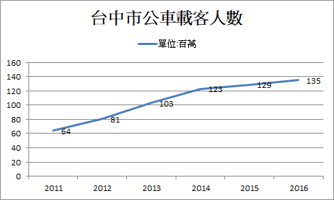
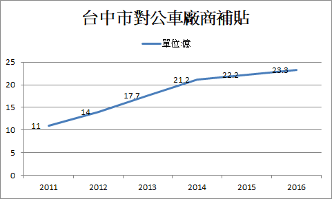

公車8公里免費
3 days ago by Jane Doe
想成為一個國際性的大城市，交通絕對是不可或缺的，儘管捷運老早說要蓋卻始終沒有結果，但台中周全便捷的公車服務，悠遊卡8公里免費的好康，便捷與省錢的交通也是台中市的一大特點。
然而，乘客獲得了票價上的減免，公車公司絕不是自行吸收成本，理所當然的市政就必須填補乘客原本應該付的車錢，為此我們分析了8公里免費政策的利弊，分別得到此項政策的成本與利益。
8公里免費的政策起因於台中的私有交通運輸工具比例過高，為了解決交通壅塞以及減少汽機車廢氣排放所造成的空氣汙染，市府決定鼓勵民眾搭乘大眾運輸工具，同時推行電子票證響應環保。
8公里免費的成本大部分來自於政府的補貼，而其效益則有：
1、旅行時間的節省。由於政策的影響，大家更願意搭乘大眾交通運輸工具而不只使用私人汽機車，道路上車輛因此減少，也造成平均交通時間降低，減少了時間成本。
2、由於路上車輛的減少，肇事所造成的醫療成本也下降了，因為8公里免費這項政策吸引了許多原本騎機車代步的人改搭公車，而機車的車禍發生率比起汽車高出許多，也可以說是許多人從相對危險的運輸方式轉換成安全的運輸方式，因此減少了意外所造成的醫療成本。
3、減少行車成本，由於公車的成本是許多人下去分攤，因此成本想當然爾的比起私人運輸工具還要節省。
4、由於大家轉乘公車，道路上車輛的減少也同時減少了空氣汙染，有利環境保護與人民身體的健康。
然而8公里免費的目的是希望台中能更適合居住，難免有時太求好心切導致政策似乎並不那麼切中人民的需求，造成了資源的浪費，例如台中快捷巴士系統，簡稱BRT。
台中的BRT，也稱為路上捷運，由於捷運系統遲遲無法完成，而台灣大道(掌握台中市經濟動脈的道路)的塞車問題仍舊十分嚴重，市府因此推出此項交通建設，在2014年，台中市展開BRT的營運，其優點是建造的成本較捷運低廉且建設期短，並加上8公里免費的政策彼此相輔相成，更能鼓勵民眾改搭大眾交通運輸工具，以減少交通壅塞。
不同於原本行經台灣大道上的公車，最顯而易見的是從一般公車轉變成能容納更多人的雙截公車。除此之外，還設立了一條公車專用道，僅供公車行駛，依原定計畫公車甚至不用停紅綠燈，如此將大幅降低通勤時間。然而，多了一條公車專用道，卻也意味著民眾能行駛的車道少了一條，根據我在台灣大道上通勤的經驗來看，交通壅擠的問題並無顯著改善。
林佳龍上台以後，當機立斷廢除BRT改施行公車優化專用道政策，這項政策增加了將近一倍的公車路線，而原本BRT與台北捷運一樣於進站與出站口刷卡通關，在優化公車專用道後又回到以往上車刷卡的模式，這一來一往之間，原本新蓋的電子感應系統已不再使用，閒置在公車站的出入口成為外來旅客的疑惑，當初的花費也付諸流水。